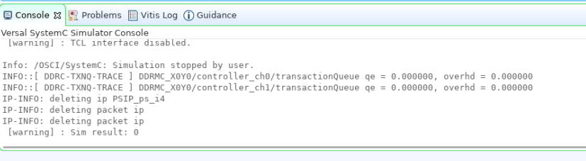
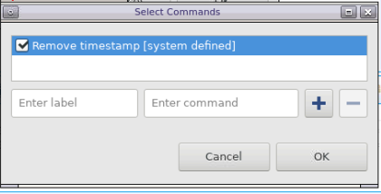
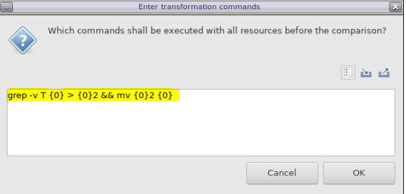

Versal ACAP AI Engine A to Z Bare-metal Flow |
Introduction¶
In this section of the tutorial, you will learn how to create a new AI Engine application project from a template and run through the Emulation-AIE process.
Step 1. Create a new AI Engine Application Project¶
Open the Vitis 2020.2 IDE if you have already closed it. You can use the same workspace as the previous stage or create a new one.
On the Welcome Page, click on Create Application Project or click File → New → Application Project.
On the platform page, if you do not have the platform created on the previous step, click on Add and select the folder
base_pfm_vck190/exportSet the application name as simple_application and select ai_engine for the processor.

Keep the default setting for next page and click Next.
In the Template page, select the Simple template. Click Finish to create the application project.

Note: In the description of the template it says that the template works only for AI Engine Emulation and SW (x86) simulation. In the following steps you will learn how to make it work on hardware.
The template imports two folders:
srccontains the sources for the kernels and the graph.datacontains the data for the simulation input (input.txt) and the golden reference for the output (golden.txt).
Open the file
project.hto see the graph. You can see that the graph (simpleGraph) has one input and one output and implements two kernels with the same function. The output of the first kernel feeds the second one.
first = kernel::create(simple);
second = kernel::create(simple);
connect< window<128> > net0 (in, first.in[0]);
connect< window<128> > net1 (first.out[0], second.in[0]);
connect< window<128> > net2 (second.out[0], out);
This is the representation of the graph.

Open the file
kernels/kernels.ccto see what function will be implemented in the kernels. You can see that this is a simple operation which is doing the sum of the real and imaginary parts of the input to create the real part of the output and the subtraction the real and imaginary part of the input to create the imaginary part of the output.
void simple(input_window_cint16 * in, output_window_cint16 * out) {
cint16 c1, c2;
for (unsigned i=0; i<NUM_SAMPLES; i++) {
window_readincr(in, c1);
c2.real = c1.real+c1.imag;
c2.imag = c1.real-c1.imag;
window_writeincr(out, c2);
}
}
Step 2. Build the Project and Run Through Emulation-AIE¶
Click on the arrow next to the hammer icon and make sure that Emulation-AIE is selected.
Click on the hammer icon to build the project.
To run System C simulation (called Emulation-AIE), click on the arrow next to the run button and click Launch AIE Emulator.
You should see the simulation running successfully in the console. The output data is written to the file
Emulation-AIE/aiesimulator_output/data/output.txt. You can compare the fileoutput.txtwith thegolden.txtfile. The output data should match the golden value.
Select the files
simple/data/golden.txtandsimple/Emulation-AIE/aiesimulator_output/data/output.txtand right-click on one of them and then click Compare With > Each Other After Transformation.
Then click on the left-most icons on the right (Pre-defined Filters).

Select Remove timestamp and click OK.

You can see that a grep command will be executed to remove the timestamps from the output file. Click OK.

A pop-up window should appear saying that the two files match which means that the graph is behaving as expected. You can move forward and integrate the graph in the full system.
Return to Step 1 — Go to Step 3
© Copyright 2020 Xilinx, Inc.
Licensed under the Apache License, Version 2.0 (the “License”); you may not use this file except in compliance with the License. You may obtain a copy of the License at
http://www.apache.org/licenses/LICENSE-2.0
Unless required by applicable law or agreed to in writing, software distributed under the License is distributed on an “AS IS” BASIS, WITHOUT WARRANTIES OR CONDITIONS OF ANY KIND, either express or implied. See the License for the specific language governing permissions and limitations under the License.
XD018